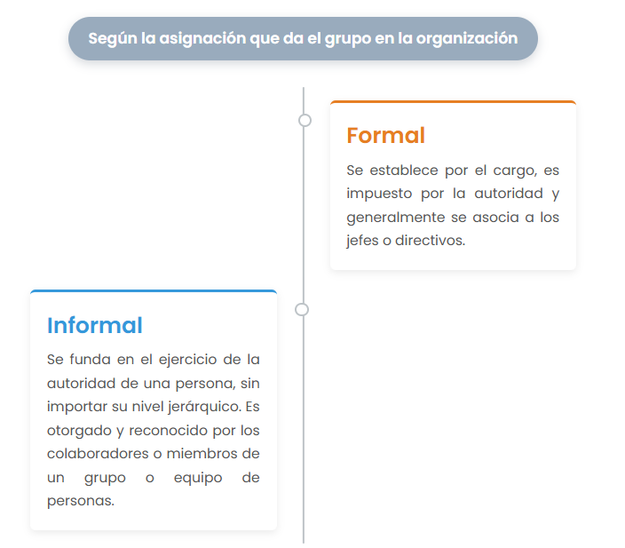

✅ Esta actividad ha sido marcada como completada en tu progreso
“El éxito de un equipo no consiste en ganar sino en trabajar en equipo para
ganar siempre y no solamente por casualidad.”
Anónimo.
Concepto
El liderazgo involucra un conjunto de relaciones entre seres humanos, en donde uno de ellos asumirá la
responsabilidad de conocer las capacidades, habilidades y destrezas propias, y de quienes forman el grupo,
para impulsar su desarrollo y coordinar los esfuerzos para lograr objetivos comunes. El liderazgo es un proceso
recíproco e interactivo entre varias personas (Cf. Alvesson y Sveningsson, 2003: 360).
El liderazgo es la habilidad y la acción que se tiene para orientar, influir, conducir y dirigir a otros para el
logro de una meta en común, aplicando conocimientos, habilidades, aptitudes y actitudes.
AUTORES COMO FELDMAN DEFINEN EL LIDERAZGO CENTRÁNDOSE EN EL LÍDER Y CÓMO ÉL AFECTA LOS SIGNIFICADOS,
LAS IDEAS, LOS VALORES, COMPROMISOS Y EMOCIONES DE LOS DEMÁS MIEMBROS DE UN GRUPO.
FELDMAN AFIRMA QUE “EL LIDERAZGO SE TRATA DE QUE UNA PERSONA TENGA EL PODER DE INFLUIR A OTROS.” ...
“EL LIDERAZGO ALINEA A LA GENTE ALREDEDOR DE UN OBJETIVO COMPARTIDO. SE TRATA DE INFLUENCIAR A LOS OTROS A
TRABAJAR COOPERATIVAMENTE, CONSTRUCTIVAMENTE, Y CON MUTUA CONFIANZA PARA AFRONTAR Y RESOLVER LAS DIFICULTADES
Y DIFERENCIAS” (FELDMAN, 1999:2-3).
El término liderazgo se refiere a un conjunto de relaciones humanas, a una capacidad o estilo de conducta y a
un rol en las relaciones con los otros. (Cf. Alvesson y Sveningsson, 2003)..
El liderazgo es un rol susceptible de ser adoptado por cualquier ser humano, independientemente de su nivel
educativo, jerárquico u ocupacional. Así, se ha comprendido que el liderazgo puede ser asumido tanto en las
rganizaciones como en la familia, por mujeres o por hombres.
Teorías del liderazgo
Los esfuerzos de comprensión de las relaciones humanas o sociales
que involucra el liderazgo, han derivado en numerosas teorías que tratan de analizar y
sistematizar alguno de sus rasgos. En este sentido, en la medida que cada teoría considera una
parte del liderazgo, pueden ser complementarias, y su consideración nos permite una visión más
amplia sobre el significado del liderazgo.
Según Nelligan (1999), se pueden agrupar las teorías del liderazgo en 5 aspectos:
TEORÍAS QUE CONSIDERAN LAS CUALIDADES DEL LÍDER:
• TEORÍA PSICOLÓGICA:
CONSIDERA QUE LAS CUALIDADES DEL LÍDER PUEDEN APRENDERSE (W. BENNIS).
• TEORÍA DEL PODER E INFLUENCIA:
ANALIZA LAS RELACIONES DE PODER Y LA INFLUENCIA QUE EJERCE EL LÍDER SOBRE LOS DEMÁS MIEMBROS DEL
GRUPO (M. WEBER).
• TEORÍA FACULTATIVA:
CONSIDERA COMO CUALIDAD DEL LÍDER SU CAPACIDAD PARA DELEGAR EL PODER Y FACULTAR A LOS MIEMBROS DEL
GRUPO. (SEMLER, BLANCHARD Y OTROS).
TEORÍAS QUE CONSIDERAN EL CONTEXTO, AMBIENTE O CONDICIONES EN QUE SURGE EL LÍDER Y DESEMPEÑA SU
LIDERAZGO:
• TEORÍA SITUACIONAL:
ANALIZA CÓMO SE DA EL LIDERAZGO EN UNA SITUACIÓN IDÓNEA Y CÓMO CAMBIA EL ESTILO, DE ACUERDO
A LAS CARACTERÍSTICAS DEL GRUPO EN SITUACIONES DIFERENTES; RECONOCE LAS DIFERENCIAS SEGÚN EL
HOMBRE, EL MOMENTO Y EL CONTEXTO (BLANCHARD).
• TEORÍA SISTÉMICA:
CONSIDERA AL LÍDER DENTRO DE UN SISTEMA DE RELACIONES, TOMANDO EN CUENTA, OBJETIVOS, INFORMACIÓN,
MOTIVACIÓN, SEGÚN CADA CONTEXTO (LORD).
• TEORÍA DE LAS CONTINGENCIAS:
ANALIZA EL DESEMPEÑO DEL LÍDER BAJO CONDICIONES NO FAVORABLES (LEWIN).
TEORÍAS QUE CONSIDERAN LOS RECURSOS DEL LÍDER PARA INCIDIR SOBRE EL GRUPO:
• TEORÍA DE OBJETIVO Y VALORES:
CONSIDERA QUE EL GRUPO SE ADHIERE AL LÍDER QUE PERSIGUE OBJETIVOS CON VALORES COMPARTIDOS POR EL
GRUPO (BURT).
• TEORÍA MOTIVACIONAL:
CONSIDERA EL PROCESO DE MOTIVACIÓN DE LOS MIEMBROS DEL GRUPO POR EL LÍDER (MASLOW, MC GREGOR).
• TEORÍA HUMANISTA:
CONSIDERA QUE EL LÍDER INFLUYE EN EL GRUPO POR SU TRATO (MAYO, PETERS).
• TEORÍA CARISMÁTICA:
EXPLICA EL LIDERAZGO POR LA INSPIRACIÓN QUE GENERA LA PERSONALIDAD DEL LÍDER (M. WEBER).
TEORÍAS QUE CONSIDERAN LAS ESTRATEGIAS POR LAS CUALES EL LÍDER ALCANZA SUS OBJETIVOS:
‡ TEORÍA CONDUCTISTA:
CONSIDERA LOS MECANISMOS POR LOS CUALES EL LÍDER LOGRA ORIENTAR LA ACCIÓN DE LOS MIEMBROS DEL
GRUPO (LIKERT).
‡ TEORÍA DE VALORES:
CONSIDERA LOS MECANISMOS POR LOS CUALES EL LÍDER LOGRA ORIENTAR LA ACCIÓN DE LOS MIEMBROS DEL
GRUPO (BURT)
TEORÍA QUE CONSIDERA LOS RESULTADOS DEL LIDERAZGO:
‡ TEORÍA DE LOS RESULTADOS:
CONSIDERA LOS RESULTADOS DE LA ACCIÓN DEL LÍDER SOBRE SU LIDERAZGO (FIEDLER).
Tipos de liderazgo
El tipo de liderazgo corresponde a un modelo,
que caracteriza la forma como el líder interactúa con el grupo.

Estilos de liderazgo
El estilo de liderazgo tiene que ver con la personalidad del líder, así como con la
percepción que tienen los demás de él. El estilo se desarrolla a partir de experiencias,
de la formación profesional y de la cultura que posee el líder.
Según Nelligan (1999), las personas que desempeñan el rol de líder adoptan múltiples estilos,
dependiendo de la circunstancia y del proceso que generen en el grupo..
No.
Estilo
¿Cómo se ejerce en un contexto laboral?
1
Personal
El líder escucha las quejas y opiniones del trabajador.
En lugar de ordenar y presionar al trabajador, lo motiva y estimula.
2
Situacional
El líder considera su acción en un momento y tiempo adecuados.
Aprovecha la oportunidad para guiar a los trabajadores, según el
momento y la situación.
3
Centrado en Valores o Ético
El líder promueve valores en los trabajadores, para aumentar la productividad.
Dirige a los trabajadores impulsándolos a seguir un código ético, claramente establecido.
4
Centrado en Nosotros
El líder conforma equipos de trabajo, que contribuyan al fomento de la paz y cordialidad en la organización.
Mediante una estrategia conciliatoria, logra que el trabajador y la organización obtengan mayores beneficios.
(Yo gano-Tú ganas-Nosotros ganamos).
5
Humanista
El líder resalta la importancia del trabajador como ser humano, porque es el principal impulsor de la organización.
Presta mayor atención a los trabajadores que a la organización.
6
Correctivo
El líder aplica sanciones a los trabajadores conflictivos, ya que causan problemas a la organización.
Gradualmente aplica medidas disciplinarias para el trabajador problemático.
7
Maquiavélico
El líder opera en la falta absoluta de principios éticos (el fin justifica los medios).
En su afán de alcanzar y conservar el poder no respeta ley, moral ni buenas costumbres,
pasando por encima de los trabadores.
8
Por Objetivos
El líder se concentra en la realización de metas.
Establece objetivos estimulantes, asignando labores concretas a los trabajadores,
con la finalidad de alcanzar metas o propósitos.
9
Por resultados
El líder conduce a los subordinados para generar resultados.
Se considera apto para dirigir las tareas de los trabajadores.
10
Racional
El líder analiza los problemas de la organización grupal y consensual,
mediante métodos lógicos, científicos y racionales.
Soluciona los problemas de manera consensuada con los trabajadores.
11
Despótico
El líder resalta su poder para justificar sus órdenes.
Manda que se hagan las cosas porque es el jefe.
12
Centralizado
El líder concentra todo el poder, sin dejar que se ejerza el liderazgo por otras personas.
Es el único que toma las decisiones de lo que debe hacer el trabajador, sin importar el lugar
en el que se encuentre.
Ordena a distancia.
13
Descentralizado
Se da una red de líderes, no totalmente independientes pero sí funcionalmente autónomos.
Se forman líderes en todos los niveles de la organización.
El líder comparte el poder con trabajadores seleccionados que también se convertirán en líderes.
14
Facultativo
El líder identifica las capacidades de los miembros del grupo y, delegándoles poder,
reconoce sus facultades permitiendo la acción liberalmente.
Distribuye las actividades de tal manera, que aprovecha al máximo las capacidades
de los trabajadores.
¿En qué ámbitos ejercemos el liderazgo?
El liderazgo se ejerce en los ámbitos siguientes:
• En la organización: como trabajador(a), integrante de un departamento, área o equipo de trabajo.
• En la familia: como padre, madre, esposo(a), hermano (a).
• En un club deportivo, cultural o social.
• En la comunidad escolar: como director, profesor, estudiante, padre o madre de familia, o miembro de una asociación.
• En una asociación altruista.
• En un grupo religioso.
• En la comunidad: como vecino, representante popular, de actividades políticas o eventos sociales y culturales.
El liderazgo influye en otros, ya que implica no sólo satisfacer las necesidades primordiales de las personas como:
la supervivencia y la seguridad, sino también, preocuparse por sus necesidades superiores como: el afecto, el sentido de
pertenencia, el bien común o el servicio a los demás.
“En la medida en que des a los otros lo que necesitan, ellos a su vez, te darán lo que deseas.”